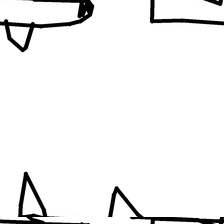
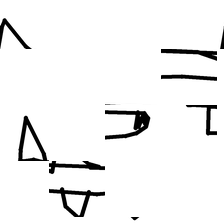
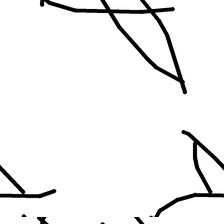
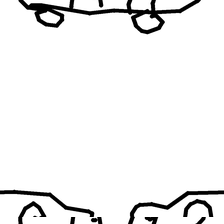
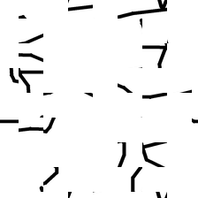
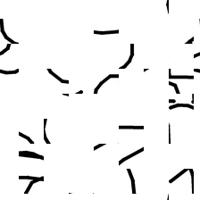

Visual Perception · Final Project
Track: Experiment
21 Humans · 1,470 Trials
Blur and Scrambling:
People vs. Vision Models
Comparing low-pass Gaussian blur and +7 px offset tile shuffling across human observers, CLIP ViT-L/14, and DINOv2 ViT-B/14.
 Intact Baseline
Intact Baseline
 Gaussian Blur (σ = 10 px)
Gaussian Blur (σ = 10 px)
 64-Tile Shuffle (+7 px)
64-Tile Shuffle (+7 px)
Uriel-Darlin Azemfack-Himele · Fanès Houeha · Halik Mamam · Franck Tchangani
Press → to navigate · O overview · N notes
Why Should the Room Care?
- ViTs are widely used as models of human vision, yet their failure modes are usually benchmarked on natural photographs rich in surface texture and color.
- Line drawings strip away texture completely: recognition must rely on local contour detail vs. global shape integration.
- Direct apples-to-apples scale: Same 10-way forced choice, same 224×224 px pixels, same deterministic damage seeds for every human and every model.
Gaussian Blur (σ)
Removes high-spatial-frequency stroke detail while preserving global silhouette layout.
Offset Tile Shuffling (+7 px)
Preserves exact pixel distribution & local ink fragments while breaking global spatial structure.
One Real Drawing (uid = 0 · Airplane)
10-AFC Task
1. Intact Baseline
Humans 3/3 ✓
CLIP ✓
DINOv2 ✓
2. Severe Blur (σ = 10 px) — Divergence!
Humans 3/3 airplane ✓
CLIP: tree ✗
DINOv2: car ✗
3. 64-Tile Shuffle (+7 px) — Joint Failure
Humans collapse
CLIP & DINOv2 collapse
intact
Baseline (0)
blur_low
Gaussian σ = 2 px
blur_medium
Gaussian σ = 5 px
blur_high
Gaussian σ = 10 px

shuffle_low 2×2 = 4 tiles (+7 px)
shuffle_medium 4×4 = 16 tiles (+7 px)
shuffle_high
8×8 = 64 tiles (+7 px)
Quick, Draw! Categories & Splits
- 10 balanced classes (CC BY 4.0) covering everyday vehicles, animals, objects, and structures.
- Disjoint splits per class: 500 train / 100 val / 100 test (7,000 total test stimuli).
- No recognized filter — prevents pre-selecting drawings friendly to neural classifiers.
Canvas & Rendering Invariants
- 224 × 224 px grayscale uint8 rendered with 4× supersampling (Lanczos anti-aliasing).
- Bounding box scaled & centered at (112, 112) with 4 px strokes and 20 px white margin.
- Margin assertion (margin = 20 > 7 px): guarantees the 7 px roll never wraps ink across edges.
Reproducible Damage Protocol
- Gaussian Blur: scipy.ndimage.gaussian_filter with constant white border (cval = 255.0).
- Offset Shuffling: strict derangement (no tile stays fixed) seeded by (1234, uid, cond_idx).
- Exact verification: Notebook asserts all 490 human PNGs equal model tensors bit-for-bit.
10-AFC Categories
1. airplane
2. bicycle
3. car
4. cat
5. chair
6. clock
7. fish
8. house
9. tree
0. umbrella
Regime 1 · Blur (σ = 10 px)
82.4% vs 53–54%
Humans Win Easily; Both ViTs Fail
True: airplane (uid 0)
Humans: 3/3 airplane ✓
CLIP: tree ✗
DINOv2: car ✗
DINOv2: car ✗
True: house (uid 701)
Humans: 3/3 house ✓ (466 ms)
CLIP: clock ✗
DINOv2: airplane ✗
DINOv2: airplane ✗
Coarse triangular roof & winged silhouette stay readable to human holistic vision despite erased stroke edges.
Regime 2 · 4-Tile Shuffle
DINOv2 67% vs 47%
ViTs Edge Out Humans on Large Parts

True: airplane (uid 3)
CLIP ✓ · DINOv2 ✓
Humans: 0/3
(cat, cat, cat ✗)
(cat, cat, cat ✗)

True: car (uid 200)
CLIP ✓ · DINOv2 ✓
Humans: 0/3
(bicycle ×3 ✗)
(bicycle ×3 ✗)
At 112 px tiles, large local parts (wheels, wings) survive inside patches — letting DINOv2 (67.1%) exceed humans (47.1%).
Regime 3 · 64-Tile Shuffle
All 10–17%
Shared Collapse Across All Observers

True: airplane (uid 2)
Humans: 0/3 (scattered)
CLIP: chair ✗
DINOv2: chair ✗
DINOv2: chair ✗

True: bicycle (uid 100)
Humans: 0/3 (scattered)
CLIP: chair ✗
DINOv2: chair ✗
DINOv2: chair ✗
At 28 px offset tiles, stroke fragments lose all global configuration; humans scatter guesses while both ViTs default to chair.